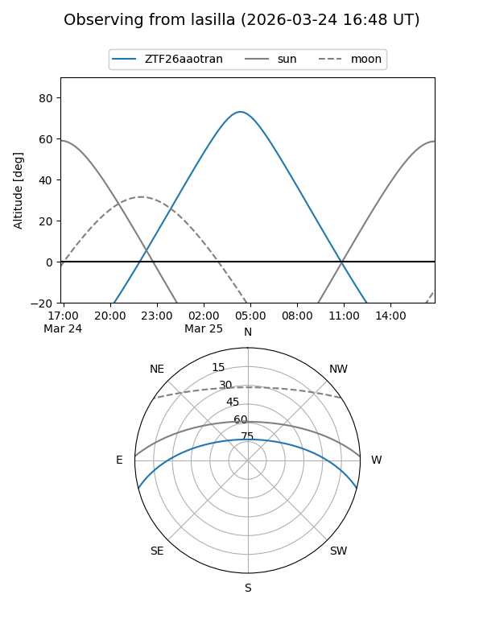
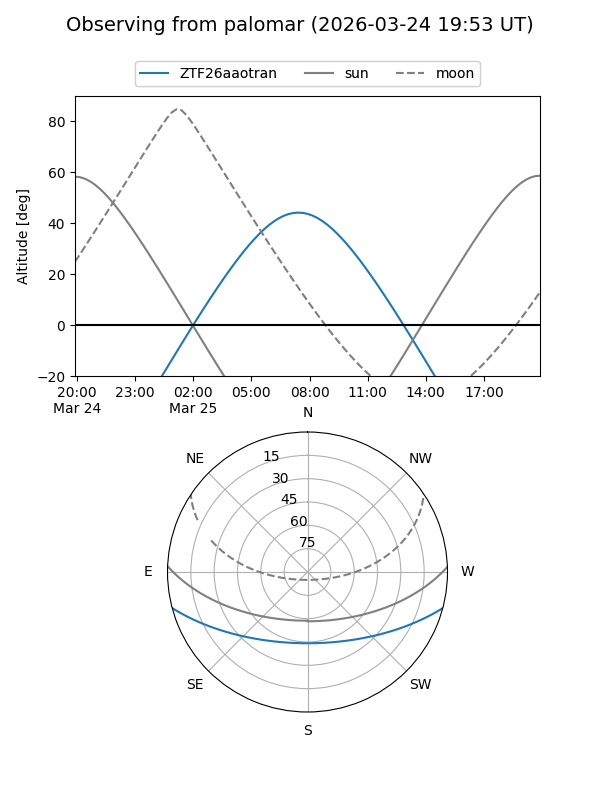

ZTF26aaotran
Target ZTF26aaotran at 2026-03-25 08:47
Aliases and brokers:
FINK: link
Lasair: link
ALeRCE: link
alt names
ZTF26aaotran (ztf,fink_ztf)
Coordinates:
equatorial (ra, dec) = 176.9416,-12.30018
equatorial (HMS+DMS) = 11:47:45.97,-12:18:00.64
galactic (l, b) = (279.4915,+47.65275)
Flags:
Photometry:
last ztfg=17.12, ztfr=16.08
1 ztfg, 1 ztfr detections
Lightcurve
Visibility


Additional plots